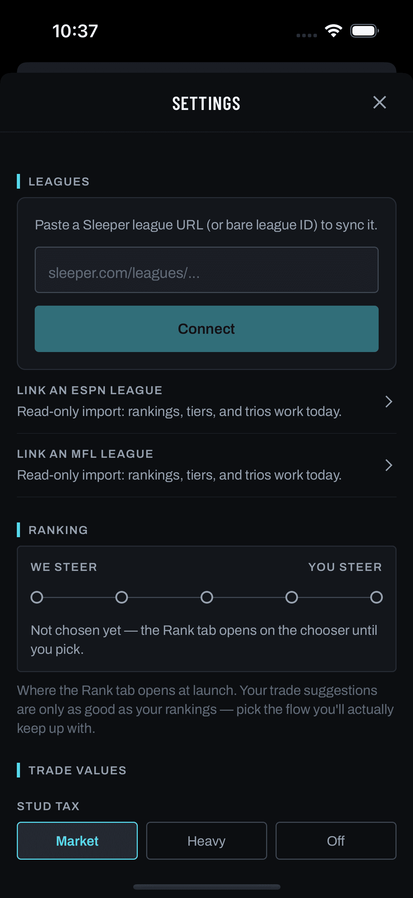
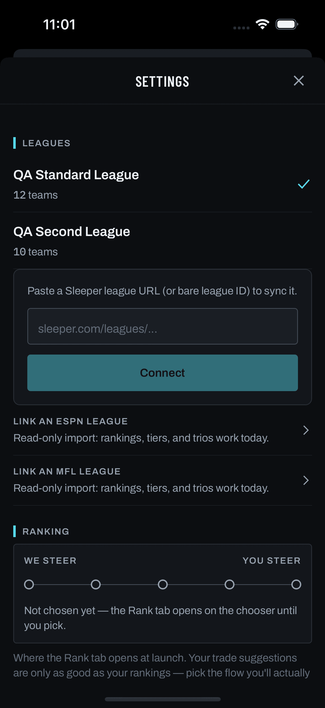
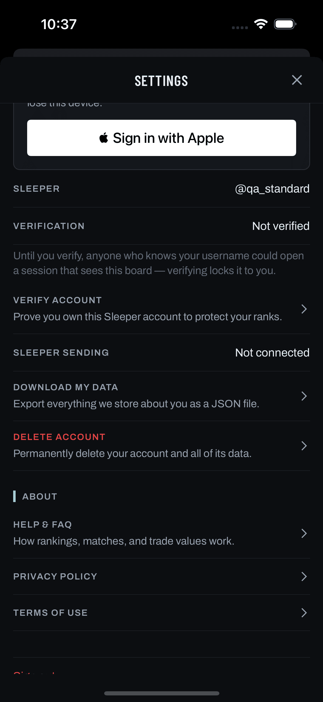

The question: the shipped Settings screen is one modal sheet holding ~25 controls across 7 sections. Can it become a top-level hub plus second-level pages — and a real pushed page instead of a half sheet — without making anyone hunt for a setting they used to be able to see?
Plan: docs/plans/settings-ia-hub/plan.md · Scope:
docs/plans/settings-ia-hub/scope.md
Operator decisions, 2026-08-18 — these bind the frames below:
account.settings_v2 retires in Phase 4, same wave.screens/mobile/settings/*.png, taken 2026-08-10 from the real app on FTF-iOS18
(release flags, profiles standard and two-leagues). Nothing in §1 is redrawn.
screens/ is frozen at 2026-08-11. manifest.json records
source_sha256 ce7e7df0… for SettingsScreen.tsx; the file on
origin/main today hashes 911c8f1e…. Five commits touched it since the
capture, and one matters here: 3293f4a (2026-08-12 platform-unlink incident) added
Disconnect ESPN account and Disconnect MFL sign-in to the Account section, and
aa2e5e7 reworked the account-only path. So the real Account capture below shows
Sleeper sending but not the ESPN/MFL disconnect rows — the exact rows this proposal moves.
Every frame in §2–§4 is a labelled reconstruction from source, not a capture.
Real captures. Note the presentation itself: the card starts below a gap with the
screen behind it still visible at the top — this is the half sheet
(presentation: 'modal', RootNav.tsx:514). Its only exits are the ✕ added by feedback
#130 and a swipe-down.

standard. Top of the sheet:
LEAGUES (connect card, ESPN + MFL link rows) → RANKING (SteerSlider) → TRADE VALUES.
Everything above is one scroll.
two-leagues. The switch rows only
appear with 2+ leagues, which is why single-league users see the connect card first.
Six rows and nothing below them. Every row carries a state preview, which is
what stops a hub from being a tax: the common question ("are notifications on?", "which stud tax am
I on?") is answered without a drill-in. Preview values here are the captured
qa_standard profile's real values wherever the capture proves them; the Notifications
preview is illustrative — that state was never captured.
__DEV__ || testing.stage_users, false in prod).What the hub is doing, row by row
type.title), not the 11px uppercase type.label that shipped rows
use for their key. With a 13px preview underneath, a label-styled title would be smaller
than its own subtitle. This is a new construction and needs a spec row in
docs/design/components.md § Navigation before it ships — flagged in the
plan, not decided here.Cost of the previews: zero network. Leagues and Ranking read
the session store; Trade values and Notifications read the React Query cache if it's already
resident; version comes from expo-constants. Opening Settings goes from six
queries plus two fetches to none.
Each page owns its own queries, so a slow link-status call can never blank the whole
of Settings the way prefsQuery.isLoading does today (SettingsScreen.tsx:750).
M marks a row that moved here from another section;
N marks something new.
GET /api/notifications/prefs is
honest. Today that query gates the entire screen, so opening Settings to switch a league waits
on notification prefs.The chrome change, isolated. Left is the shipped modal (cropped from the real capture); right is the pushed page. This is not cosmetic — it's what removes the navigation hack at SettingsScreen.tsx:227.
HeaderBack (RootNav.tsx:168) — the #151 pattern, needed
because the native back control is dead on iOS 26 when the previous screen runs
headerShown: false, which Main does. The ✕ is deleted with the
presentation, along with its testID settings.close-btn.What the push buys, beyond looking right
goBack() then navigate(), because
pushing onto a modal stack strands the user. Cost: back from Verify account lands on the
tabs, not on Settings. On a pushed page it's a plain navigate and the back stack
works.FeedbackFAB, so Settings is one of the only
surfaces where a tester can't file in place. Pushed pages aren't exempt.ux.deeplink_router_v2 is on in prod; settings/notifications can
open a real page with a real parent instead of a modal with none.#130 is not being reverted. The ✕ was a real fix for a real
complaint about an undiscoverable exit; the plan removes the presentation that caused it, and
records that in DECISIONS.md so a later session doesn't re-add a modal citing
#130.
Nothing is dropped. Every row below is live in prod today; the two
new entries are the only additions. This table is the contract a
structural check (mobile/tests/check-settings-ia.js) asserts at build time — it's what
catches a setting silently lost in the split.
| Row | Today | Proposed | Note |
|---|---|---|---|
| Switch league rows | Leagues | Leagues | unchanged |
| Connect a league card | Leagues | Leagues | unchanged |
| Link an ESPN league | Leagues | Leagues | unchanged — still routes to LeaguePicker with the link sheet auto-opened |
| Link an MFL league | Leagues | Leagues | unchanged |
| Disconnect Sleeper sending | Account | Leagues | moved link and unlink on one page |
| Disconnect ESPN account | Account | Leagues | moved not in the 2026-08-10 capture — added by 3293f4a |
| Disconnect MFL sign-in | Account | Leagues | moved same — added by 3293f4a |
| Rank-home SteerSlider | Ranking | Ranking | unchanged keeps immediate-apply |
| Stud tax | Trade values | Trade values | unchanged |
| Pick pricing | Trade values | Trade values | unchanged gains its own TickLabel |
| The Analyst | Guided tour | Help & about | moved it's the in-app help system |
| Denied-permission banner | Notifications | Notifications | unchanged |
| Trade matches · Weekly digest · Stay in the game | Notifications | Notifications | unchanged |
| Pause overnight · Time zone | Notifications | Notifications | unchanged |
| Identity rows · Link Apple · Sleeper · account-only link form | Account | Account & data | unchanged also feeds the hub identity block |
| Verification · Verify account | Account | Account & data | unchanged back now returns here, not to the tabs |
| Public profile | Account | Account & data | unchanged profiles.user_toggle is false in prod — dark today, carried anyway |
| Download my data | Account | Account & data | unchanged |
| Delete account | Account | Account & data | unchanged stays last on its page |
| Help & FAQ · Privacy · Terms | About | Help & about | unchanged |
| Test feedback · Test stages | Testing | Testing | unchanged hub row gated as today |
| Sign out | bottom of the sheet | Account & data | moved operator decision — two taps from the gear instead of one |
| Version + build | — | Help & about | new no version row exists today |
| FeedbackFAB | — | every page | new #188; the modal was exempt |
Not designed here, on purpose. No native inset-grouped list styling — ADR-008 already rejected that trade explicitly, so this stays Chalkline hairline rows throughout. No new settings beyond the version row. No change to what any setting does: stud tax, pick pricing, rank-home routing, notification prefs and every disconnect behave exactly as they do in the shipped build. No collapse-by-default groups — the #243 scroll audit is right that hiding settings a user came to find is a regression, and grouping isn't hiding when the hub previews state.